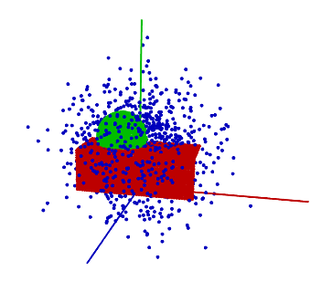
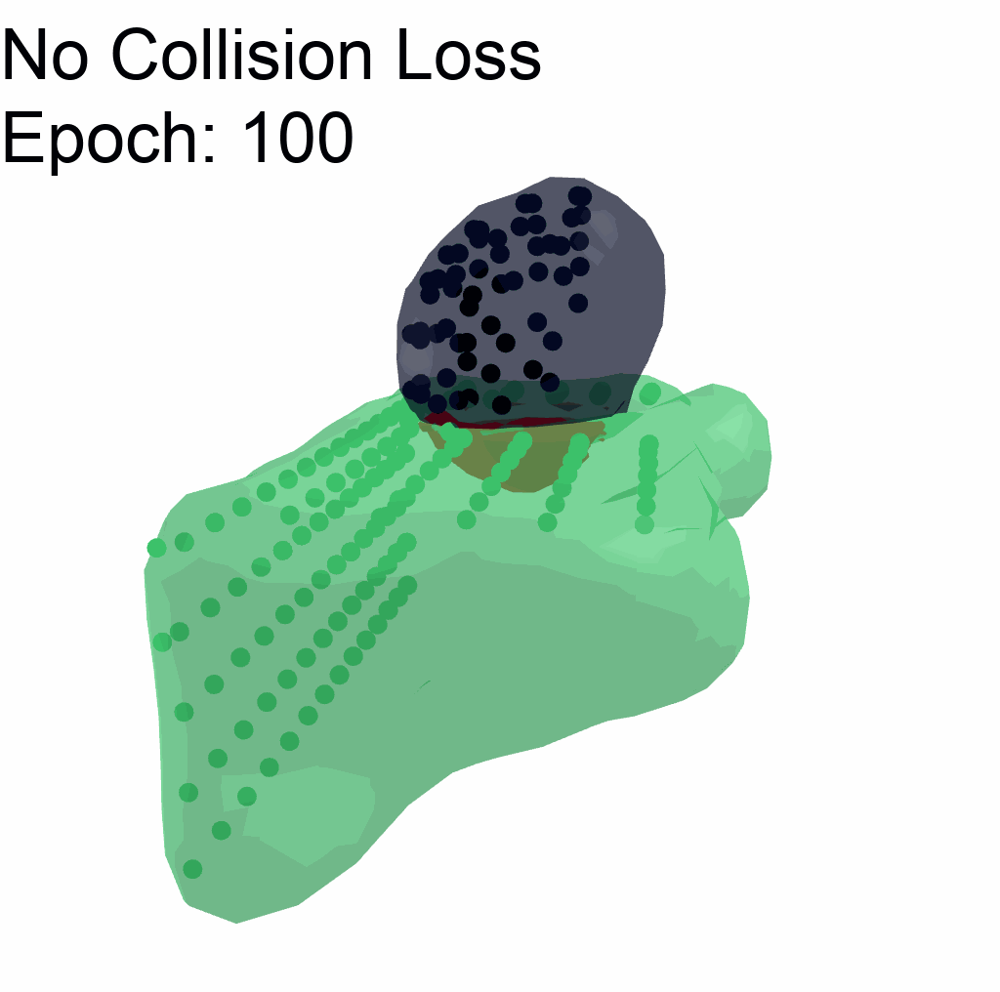
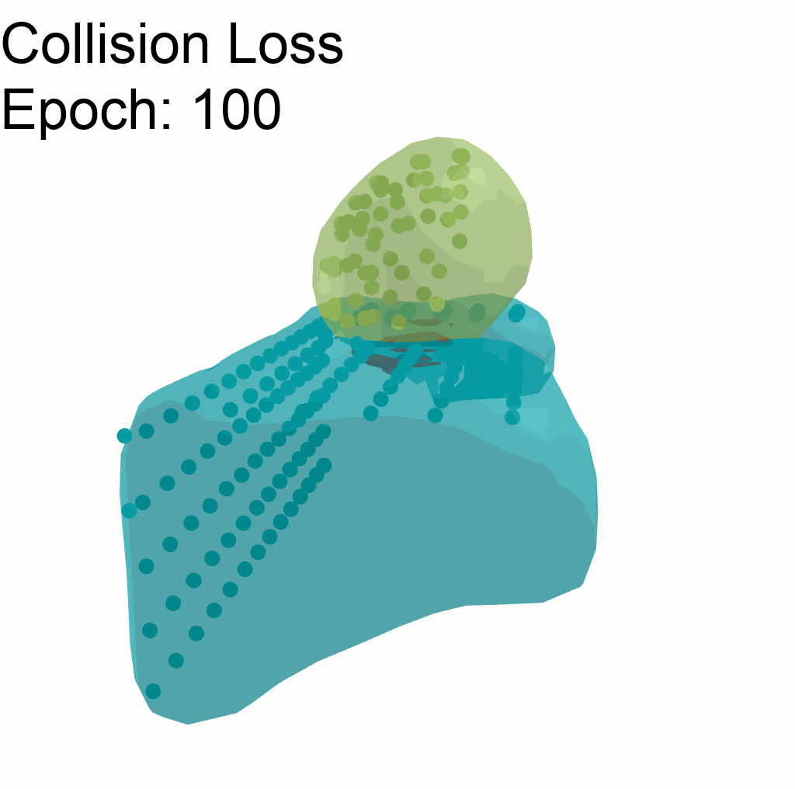
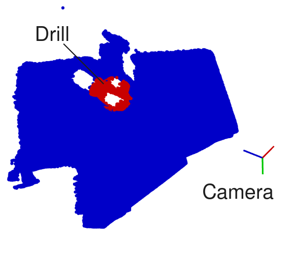
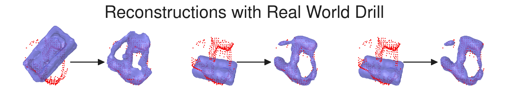
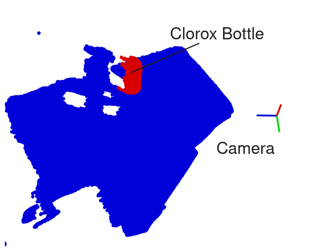
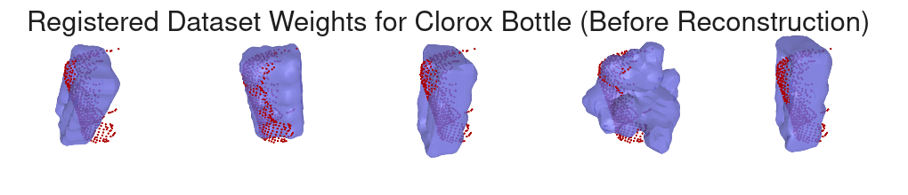
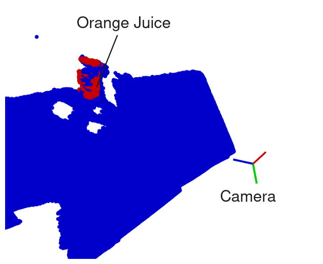
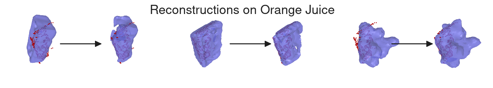

2024 Oct 11
We are trying to build off of V-PRISM [1] and create a method for 3D reconstruction that enforces some sort of object-level prior during probabilistic reconstruction over a multi-object scene. Last week, I experimented with a collision loss. This week I tried to hook things up to a real world scene. The results were not great, but hopefully we will get some ideas for improvement.
(This section is copied from last week)
Inspired by [2]. I penalize collisions with a loss of the following form:
L_\text{collision} = \mathbb E \left[ \max\left(0, \sum_i \sigma(w_i^\top \phi(x)) - 1\right) \right].
In practice, to approximate the expected value, I sample some points in the area of the scene, in the example below, those sampled points might look something like this:

Then, I sum over the occupancy probabilities of objects and penalize when the probabilities sum to more than 1.
Here I have an example of using collision loss vs not using it on a simple scene. The red in the graphics is the intersection of the two meshes:
 
As you can see, the collision loss is not perfect, but it does help penalize the collision. Note that for this example, it uses gradient descent, and there is not a prior.
The method used in this section is the same as we have been using. It can be visualized with this graphic:
Basically, we first do a “query” that also does registration, then we perform reconstruction via optimization.
I collected a multi object 3D scene with the kinect camera setup in the lab. I used Grounded SAM [3] with a a custom prompt to generate the segmentations. Here is what that multi-object scene looks like:
I think this is a good case study for our uses because it has a little bit of noise from segmentation, and in the point cloud. It also has “in-distribution” objects as well as one not in YCB (orange carton). Some objects are also interesting shapes beyond just boxes, such as the banana and drill. There is also a little bit of occlusion.
Drill: The first reconstruction is the drill. For context, here is a view of the table, so you can see where the camera is and where the drill is in relation to it:

Here is the result of the reconstruction:

As you can see, it is not great. It seems like this is due to not finding a drill to use as a “prior”.
Clorox Bottle: I want to see if maybe we can get matches for the Clorox bottle. Here is the context for this one FYI:

Then, we vizualize registered samples from the dataset instead of the reconstructions. Here are some samples:

Obviously it doesn’t look great.
Orange Juice: While I’m here, even though things aren’t working great, I figured I would try to reconstruct the orange juice box. This had a noisy segmentation and is not an object in YCB dataset [4]. Here is what that segmentation looked like for reference:

Here are some reconstructions:

Again, not great, but there it is.
EDIT: I have identified one area where the approach could be improved that I don’t quite have time to implement: I did not verify that the hinge point were aligned with the table.
I think we still have the following steps ahead to get a paper working:
Next week is IROS in Abu Dhabi. V-PRISM will be presented on Tuesday, 14:00-15:00. It will be part of the “Simultaneous Localization and Mapping (SLAM) I” session in room 10.
My NSF-GRFP application will be due on Friday Oct. 18. I have continued to update my drafts. here are my current working drafts for the two required statements. I plan to edit these during my (long) travel to Abu Dhabi.
I am maybe worrying about how well defined my research proposal needs to be. In the statement, I have the following:
Aim 1: One of the limitations of V-PRISM is that while uncertainty is captured, the backside of the objects are not reconstructed according to how one would expect everyday objects to look. This is because V-PRISM uses an uninformative prior over the map. In this proposed work, we would perform Bayesian inference while using a more informative prior constructed offline from widely available mesh datasets. We already have preliminary results of such a method being able to reconstruct simple, single-object scenes. We hope to extend this to be both robust to out of distribution objects and extend to multi-object scenes. This would allow methods for downstream tasks to be more robust and performant. In order to validate these claims, experiments similar to V-PRISM should be performed. An experiment also showing improvement in a downstream task such as grasping in clutter with our method would be very helpful to the argument.
Aim 2: Active learning has been studied in the context of robotics. The idea is to have the robot take specific actions with the goal of lowering uncertainty about the state of the outside world. Because V-PRISM, and potentially the method from Aim 1 provide principled uncertainty, we could leverage this to perform active learning. An example could be doing next best view guided movements with a wrist-mounted camera. One exciting direction is to leverage tactile sensors. Active learning with tactile sensors has been proposed before to determine individual new points of contact [4], but not for occupancy maps and trajectories. For this project, we would develop a method that continuously updates the map in a feedback loop by detecting whether the tactile sensor is in contact with the object. Our method would determine actions for the robot that move the tactile sensor towards the most uncertain areas of the scene. Experimentally, we would need to show that this method is both able to refine the original map and that the final map is accurate.
Aim 3: Studying dynamics of robotic systems is a large focus of robotics research. With regard to robotic manipulation, multiple different ways of modeling dynamics have been proposed. For example, analytical differerentiable simulators as well as learned object dynamic models such as [5] have been introduced. We can leverage these models to both inform reconstruction and propagate uncertainty from our reconstruction methods through time. Doing this can help enable robots to take actions during tasks that reduce uncertainty of outcomes. Experiments to verify this aim would focus on showing reconstruction improvement and uncertainty reduction through simple manipulation tasks like pushing objects in both real world and simulation.
I’m not sure if I need to include more specifics.